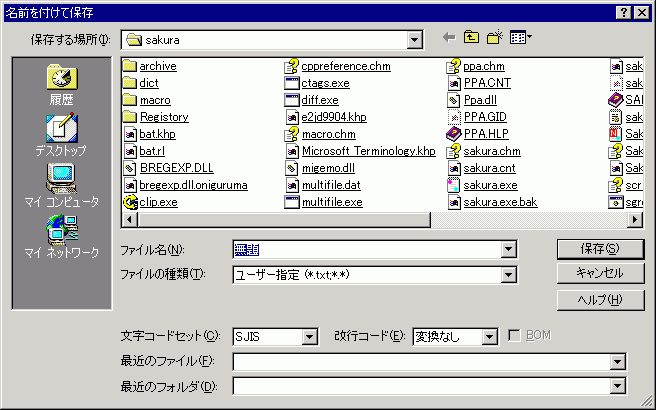

名前を付けて保存
現在編集しているテキストにファイル名を付けて保存します。

・[文字コードセット]
保存するときの文字コードセットを、表示された中から選択することができます。
SJIS、JIS、EUC、Unicode、UnicodeBE、UTF-8、UTF-7の中から選択することができます。
・[改行コード]
ファイルを保存するときに、統一する改行コードを指定します。
変換なしを選ぶと、統一せずに、編集中の各行の改行コードのまま保存します。
CR+LF(Windows)、LF (UNIX)、CR (Mac)の中から選択することができます。
・[BOM]
BOMを付加する場合にチェックしてください。
文字コードセットで、Unicode、UnicodeBE、UTF-8を選んだ場合のみ利用可能です。
・[最近のファイル]
最近使ったファイルの一覧をアルファベット順に見ることができます。
・[最近のフォルダ]
最近使ったフォルダの一覧をアルファベット順に見ることができます。
フォルダを選択すると、現在のフォルダが変化します。
 ヒント
ヒント
ダイアログ表示時にプレースバーを表示します。(sakura:1.5.8.0以降)
 注意
注意
(sakura:1.5.14.0以降)
ファイル名に拡張子を指定しないときは、現在のファイル名の拡張子を自動で補います。
(無題)のときは、.txtを補います。
■マクロ構文
・構文: FileSaveAs( str1 :String, int2 :Integer, int3 :Integer );
str1 ファイル名
int2 文字コード（省略可能）
int3 改行コード（省略可能）
・記録: ×
・解説
文字コードは以下のいずれかを指定することができます。
0 SJIS（省略時規定値）
1 JIS
2 EUC
3 UNICODE
4 UTF-8
5 UTF-7
6 UNICODE(BigEndian)
改行コードは以下のいずれかを指定することができます。
0 変更しない（省略時規定値）
1 CRLF(Windows)
2 LF(UNIX)
3 CR(Mac)
注意
名前を付けて保存のダイアログをマクロで出すことはできません。
注意
拡張子の自動補完は、マクロからの実行では動作しません。